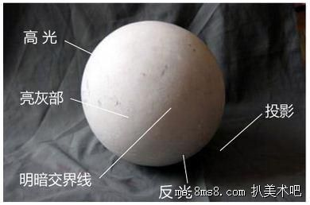
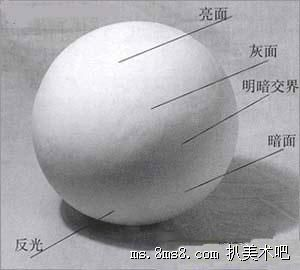

所有的美术初学者在素描入门时，都会接触到一个专业名词——“明暗五调子”，掌握好对“明暗五调子”的基本知识和变化特点，并能够在创作时灵活运用，才说明基本功够扎实，可以进行后面的更有难度的学习。那么，什么是“明暗五调子”？如何运用“明暗五调子”？今天，我们就带大家一起学一学。

1、什么是明暗五调子？
从美术专业的角度来说，明暗五调子是指物体表面由于光线的投射，形成的明暗变化规律，因物体的材质、结构不同，这种明暗变化规律也不同。这五个色调是指：亮面、灰面、明暗交界线、暗面、反光。 熟悉了明暗五调子之后，还得了解一个概念，即三大面，三大面实际上就是黑、白、灰三色，三大面细分之后的结果就是五调子，一幅素描作品由这些调子互相配合而成。

2、如何运用“明暗五调子”？
（以球体为例） 运用明暗五调子的前提是找准明暗交界线，因为该线是较好表现物体明暗关系的分界线，一面是明调，一面是暗调，给绘画者以明暗指引。通俗来讲，明暗交界线是亮面与暗面转折交界的地方，找到明暗交界线之后，高光与反光就自然一目了然。比如说，给一个球体打光之后，球体表面就会出现明、暗半球，区别明暗的那条线就是明暗交界线，正对光源的那半球受光最多，背对光源的那半球受光最少，分别为亮面与暗面。亮面与明暗交界线之间的部分即为灰面，而物体的影子即为投影。 由于光线的变化，同一物体在不同光线强度以及不同角度之下，明暗交界线也会随之变化，因此，在判断五调子的时候，要注意准确性与灵活性相结合，利用不同明暗调子来体现素描中物体的艺术感与立体感。